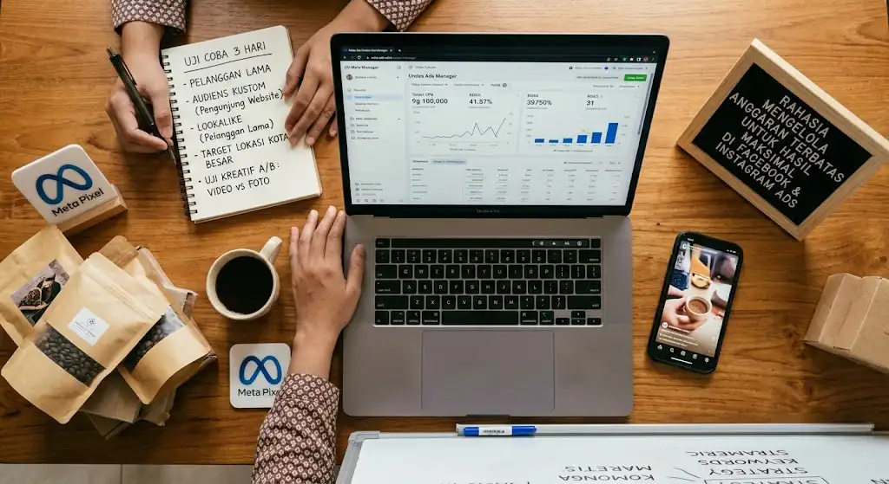

Rahasia Mengelola Anggaran Terbatas untuk Hasil Maksimal di Facebook & Instagram Ads
Banyak pemilik usaha kecil mengira iklan digital hanya efektif jika dijalankan dengan dana besar. Padahal, anggaran Rp50.000 hingga Rp100.000 per hari pun bisa menghasilkan penjualan yang konsisten asalkan dikelola dengan strategi yang tepat.
Kuncinya bukan seberapa besar uang yang dikeluarkan, melainkan seberapa cerdas uang tersebut dialokasikan. Artikel ini membahas langkah-langkah praktis agar setiap rupiah di Facebook dan Instagram Ads bekerja lebih keras untuk bisnis Anda.
Daftar Isi
- Tentukan Satu Tujuan Kampanye yang Jelas
- Kenali Audiens dengan Presisi
- Mulai dengan Anggaran Kecil, Uji, Lalu Skalakan
- Pahami dan Hormati Learning Phase
- Kekuatan Materi Kreatif adalah Penentu Utama
- Manfaatkan Penempatan Iklan Secara Cerdas
- Pasang Meta Pixel dan Conversions API
- Terapkan Strategi Retargeting
- Pantau Metrik yang Benar-benar Penting
- Jadwalkan Evaluasi dan Optimasi Rutin
Poin Penting (Key Takeaways)
- Anggaran kecil bisa sukses jika difokuskan pada satu tujuan spesifik.
- Fase pengujian (testing) dan penghormatan terhadap "Learning Phase" sangat krusial agar anggaran tidak boncos.
- Materi kreatif (gambar/video) kini menjadi penentu terbesar kesuksesan konversi Meta Ads.
- Membaca data metrik secara logis dan menerapkan retargeting adalah kunci skalabilitas.
1. Tentukan Satu Tujuan Kampanye yang Jelas
Kesalahan paling umum pengiklan pemula adalah menginginkan semuanya sekaligus: jangkauan luas, interaksi tinggi, sekaligus penjualan. Dengan anggaran terbatas, fokuslah pada satu tujuan utama.
- Penjualan (Sales): cocok untuk toko online dengan produk siap beli.
- Prospek (Leads): cocok untuk jasa, properti, kursus, atau bisnis berbasis konsultasi.
- Pesan (Messages): cocok untuk bisnis yang closing lewat WhatsApp atau Direct Message.
Algoritma Meta bekerja dengan mengoptimalkan satu sasaran. Semakin jelas tujuannya, semakin efisien sistem mencari orang yang berpotensi melakukan tindakan tersebut.
2. Kenali Audiens dengan Presisi, Bukan Seluas-luasnya
Audiens yang terlalu luas membuat anggaran habis pada orang yang tidak relevan. Sebaliknya, audiens yang terlalu sempit membuat biaya per hasil melonjak. Carilah titik tengahnya.
- Mulai dengan audiens berukuran sekitar 500.000 hingga 2 juta orang.
- Gunakan targeting lokasi yang spesifik, misalnya kota atau wilayah yang benar-benar terjangkau pengiriman Anda.
- Manfaatkan Custom Audience dari data pelanggan, pengunjung website, atau penonton video.
- Gunakan Lookalike Audience untuk menjangkau orang yang mirip dengan pembeli terbaik Anda.
Pelanggan lama dan pengunjung website adalah audiens termurah untuk dikonversi karena mereka sudah mengenal merek Anda.

3. Mulai dengan Anggaran Kecil, Uji, Lalu Skalakan
Jangan langsung menggelontorkan dana besar pada iklan yang belum teruji. Terapkan pola uji coba bertahap:
- Fase uji (3-5 hari): jalankan 2-3 variasi iklan dengan anggaran kecil dan setara.
- Fase evaluasi: bandingkan biaya per hasil, rasio klik (CTR), dan konversi.
- Fase skala: naikkan anggaran pada iklan pemenang secara bertahap, sekitar 20% setiap 2-3 hari.
Kenaikan anggaran yang drastis dapat mengganggu fase pembelajaran (learning phase) algoritma sehingga performa justru menurun.
4. Pahami dan Hormati Learning Phase
Setiap kampanye baru melewati masa pembelajaran, yaitu ketika sistem Meta mencari pola siapa yang paling mungkin merespons iklan Anda. Biasanya sistem membutuhkan sekitar 50 hasil dalam satu minggu untuk keluar dari fase ini.
Agar tidak boros, hindari:
- Mengubah target audiens berulang kali.
- Mengganti materi iklan setiap hari.
- Mematikan dan menyalakan kampanye secara tidak menentu.
Setiap perubahan besar akan mengulang proses belajar dari awal, dan itu berarti anggaran terbuang.
5. Kekuatan Materi Kreatif adalah Penentu Utama
Dalam beberapa tahun terakhir, algoritma Meta makin otomatis dalam menentukan audiens. Artinya, materi kreatif kini menjadi faktor pembeda terbesar. Iklan yang menarik membuat biaya klik lebih rendah dan peluang konversi lebih tinggi.
- Tangkap perhatian dalam 3 detik pertama. Gunakan visual yang kuat atau kalimat pembuka yang memancing rasa penasaran.
- Sampaikan satu pesan utama. Jangan membebani satu iklan dengan terlalu banyak penawaran.
- Gunakan format vertikal 9:16 untuk Reels dan Stories karena mengisi layar penuh di ponsel.
- Tampilkan bukti sosial, seperti testimoni, ulasan pelanggan, atau foto hasil nyata.
- Cantumkan ajakan bertindak yang jelas, misalnya "Pesan Sekarang" atau "Chat via WhatsApp".
6. Manfaatkan Penempatan Iklan (Placement) Secara Cerdas
Pengaturan Advantage+ Placements memungkinkan Meta menayangkan iklan di berbagai tempat secara otomatis, mulai dari Feed, Stories, Reels, hingga Audience Network. Untuk anggaran terbatas, pendekatan ini umumnya lebih hemat karena sistem mencari lokasi dengan biaya terendah.
Namun, pantau laporan penempatan secara berkala. Jika satu lokasi terbukti boros tanpa hasil, Anda bisa mengecualikannya. Pastikan juga materi kreatif Anda tampil baik di setiap format agar tidak terpotong atau terlihat janggal.
7. Pasang Meta Pixel dan Conversions API
Tanpa data, optimalisasi hanyalah tebakan. Meta Pixel membantu melacak perilaku pengunjung website, seperti melihat produk, menambah ke keranjang, hingga membeli. Conversions API melengkapinya dengan pengiriman data langsung dari server sehingga pelacakan lebih akurat, terutama setelah pembatasan privasi pada perangkat iOS.
Data ini memberi manfaat ganda: algoritma lebih pintar mencari calon pembeli, dan Anda bisa melakukan retargeting kepada orang yang sudah menunjukkan minat.
8. Terapkan Strategi Retargeting untuk Konversi Murah
Orang yang pernah berinteraksi dengan bisnis Anda jauh lebih mudah diyakinkan. Bangun alur sederhana:
- Tahap awal: iklan untuk audiens baru agar mengenal produk.
- Tahap tengah: iklan untuk yang menonton video atau mengunjungi website tanpa membeli.
- Tahap akhir: iklan penawaran khusus bagi yang sudah menambah ke keranjang atau membuka halaman pembayaran.
Alokasi sekitar 20-30% anggaran untuk retargeting umumnya sudah cukup memberi dampak signifikan.
9. Pantau Metrik yang Benar-benar Penting
Jangan terjebak pada angka yang tampak bagus tetapi tidak menghasilkan uang, seperti jumlah like atau jangkauan. Fokuslah pada metrik berikut:
| Metrik | Arti | Mengapa Penting |
|---|---|---|
| CPM | Biaya per 1.000 tayangan | Menunjukkan seberapa mahal audiens Anda |
| CTR | Persentase orang yang mengeklik | Mengukur daya tarik iklan |
| CPC | Biaya per klik | Efisiensi lalu lintas |
| CPA | Biaya per akuisisi/pembelian | Indikator utama profitabilitas |
| ROAS | Pendapatan per rupiah iklan | Mengukur keuntungan sesungguhnya |
Hitung titik impas Anda. Jika margin produk 40%, maka ROAS minimal yang dibutuhkan adalah 2,5 agar tidak rugi. Angka ini menjadi patokan kapan sebuah iklan layak dilanjutkan atau dihentikan.
10. Jadwalkan Evaluasi dan Optimasi Rutin
Iklan yang baik hari ini bisa menurun minggu depan karena audiens mulai jenuh (ad fatigue). Lakukan kebiasaan berikut:
- Tinjau performa setiap 2-3 hari, bukan setiap jam.
- Matikan iklan yang biaya per hasilnya jauh di atas target setelah data cukup.
- Perbarui materi kreatif setiap 2-4 minggu.
- Catat hasil setiap pengujian sebagai bahan pembelajaran.
Kesalahan Umum yang Perlu Dihindari
- Menyerah terlalu cepat. Menilai iklan hanya dalam 24 jam tidak memberi data yang memadai.
- Mengarahkan ke halaman yang lambat atau membingungkan. Iklan bagus akan sia-sia jika halaman tujuan buruk.
- Memakai tombol "Boost Post" terus-menerus. Ads Manager memberi kontrol dan opsi optimasi yang jauh lebih lengkap.
- Mengabaikan penawaran. Produk yang tidak kompetitif sulit diselamatkan oleh iklan sehebat apa pun.
Anggaran terbatas bukan hambatan, melainkan tantangan yang melatih ketelitian. Dengan tujuan kampanye yang fokus, audiens yang relevan, materi kreatif yang kuat, pelacakan data yang akurat, dan evaluasi yang disiplin, bisnis kecil dapat bersaing dengan pemain yang lebih besar.
Mulailah dari skala kecil, belajar dari data, lalu kembangkan apa yang terbukti berhasil. Ingat, iklan yang sukses adalah hasil dari pengujian berkelanjutan, bukan keberuntungan sesaat.